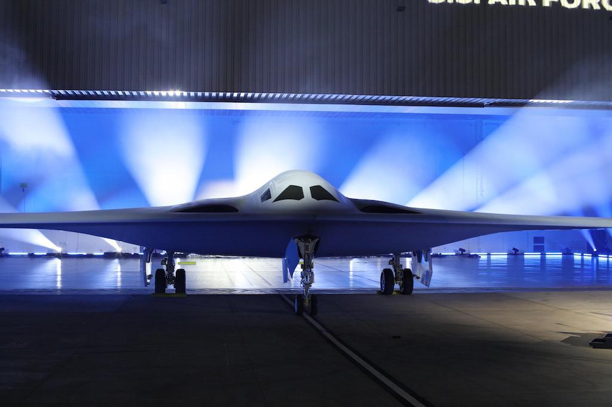
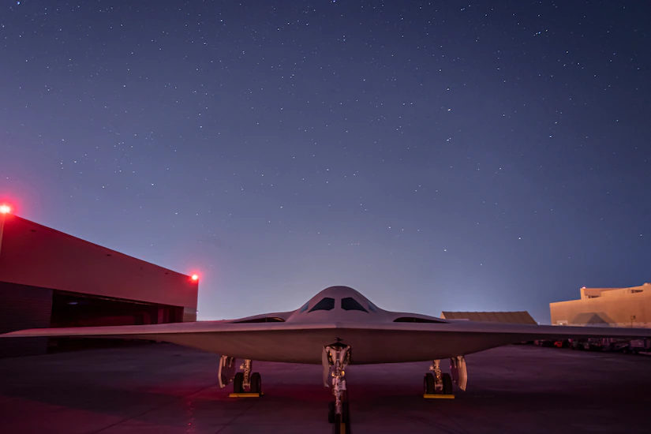
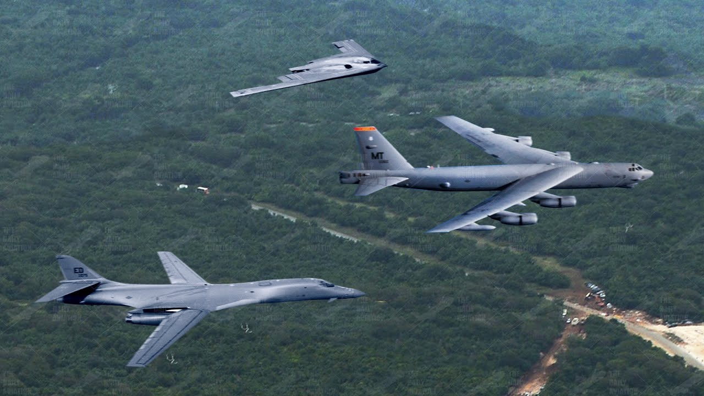

The B-21 Raider was revealed with all the pomp and circumstance it deserved at Northrop Grumman's Plant 42, ushering in a new age of military and aviation technology. The product of more than 40 years of progress in stealth aviation, the B-21 Raider, named for the infamous Doolittle raiders, will be the hardest aircraft to detect on radar folllowing its only stealth bomber predecesor, the B-2 Spirit.
The airframe displayed at the reveal was an empty shell, as many of the avionics and other components are still in development. Consequentially, the groundbreaking aircraft has yet to take its first flight, but is scheduled to do so in late 2023.
What was most significant about the reveal was what Secratary of Defense Lloyd J. Austin III had to say. Being purposefully vague, the Secratary of Defense spoke on each aspect of the aircrafts capabilities, boasting not any numbers of benchmarks, but promises to our adversaries of what this aircraft could do.
Secratary of Defense comments
Perhaps the most shocking of all the Secratary of Defense's comments came as he commented on the projected range of the aircraft. He is quoted for saying No other long-range bomber can match its efficiency. It won’t need to be based in-theater, and it won’t need logistical support to hold any target at risk," hinting at the idea that the B-21 will not need to air refuel to reach global targets.
"No other long-range bomber can match its efficiency. It won’t need to be based in-theater, and it won’t need logistical support to hold any target at risk" -The Honorable Lloyd J. Austin III
Among other comments, he said “The B-21 looks imposing, but what’s under the frame and the space-age coatings is even more impressive... Even the most sophisticated air defense systems will struggle to detect the B-21 in the sky.” While specific numbers remain and will continue to remain classified, what has been revealed no doubt caused restless nights for adversaries who were no doubt tuned into the unveiling. To learn more about the B-21 and its unveiling, visit Northrop Grummans page here.
The Future of America's Bomber Fleet
Naturally, questions may arise about America's current fleet of heavy payload and long range strike bombers. The B-52 Stratofortress for example has been in service in one variant or another since the Vietnam War, and the B-1B Lancer since the Cold War. Surprisingly, it's the B-1 or "BONE" that finds itself on the future chopping block, with the B-21 slated to fly alongside B-52's into the 2050's.
 Top to bottom: B-2 Spirit, B-52 Stratofortress, and B-1B LancerThe B-2 Spirit, to which the B-21 bears a striking resemblance, will also eventually be replaced by the B-21, which promises to fly the Spirit's mission better and cheaper.
The retirement of these powerful and effective bombers won't happen immediately however, as the B-21 isn't slated to enter service for another few years, and it will take even longer after that for the first of these aircraft to make their way to the boneyard.
Images found in Google search